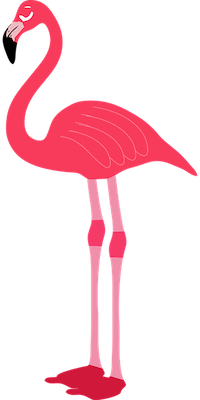

Schysst Som företag på sociala medier är det viktigt att respektera alla och vara väldigt tillmötesgående. Beroende på vilken målgrupp det riktar sig mot kan man använda olika typer av språkformer, om det riktar sig mot unga bör man använda sig av termer och uttryck som är aktuella i dagsläget. Om det däremot är reklam som riktar sig till vuxna bör du använda ett mer formellt språkbruk som inger större förtroende.
Att ta ansvar för kommentarsfält är en stor del av användandet, det är därför viktigt att rensa bland kommentarer och se till att det sköts snyggt. Om det är folk som är elaka mot andra bör dom blockas eller kontaktas för att förstå att det är ett dåligt beteende. En hemsida som tillåter användare att publicera egna inlägg/bilder/videos tycker jag ska ha en spärr som gör att inget publiceras utan tillstånd utav en administratör. Detta är för att slippa onödiga eller stötande inlägg, men också för att det är lätt att läka privat information och tala nedvärderande om andra.
För att en hemsida ska framstå som professionell för mig tycker jag att man ska använda en anpassad språkform där man skriver på en nivå för målgruppen. Designen ska aldrig vara för plottrig och det ska vara lätt att navigera sig runt på sidan.
Säkerhet Som använder finns det saker att tänka på när man skapar en hemsida t ex webbhotell, val av administratörslösenord, hantering av lösenord, formulär och vilka risker det finns när man använder skript osv. När man väljer webbhotell brukar de flesta konsumenter välja det billigaste vilket är helt fel, då är det lätt att man får de man betalar för. Ett dåligt presterande webbhotell är irriterande för både dig och besökare, det är aldrig kul att vara inne på en hemsida som laggar och som läser in långsamt.
Lösenord och personlig information är viktigt att det sköts rätt, som användare är det bra att inte ha samma lösenord på flera hemsidor. Då är risken att bli hackad högre. Som admin på en hemsida bör du ha koll på vilket företag som erbjuder bäst skydd och omsorg av personliga uppgifter. Samma gäller här, lägg pengar på att höga säkerheten istället för att ta det billigaste.
Standard och lagar På webben finns många lagar som gäller, om du skriver en text eller publicerar en selfie blir du upphovsman till verket. Du som upphovsman har då upphovsrätt för just det verket och om någon vill använda det så måste de fråga dig om lov. Om du vill använda ett verk utan att från upphovsman gäller följande regler: